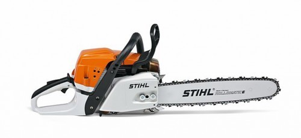
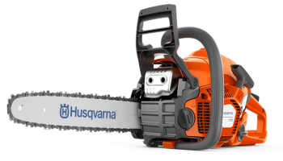
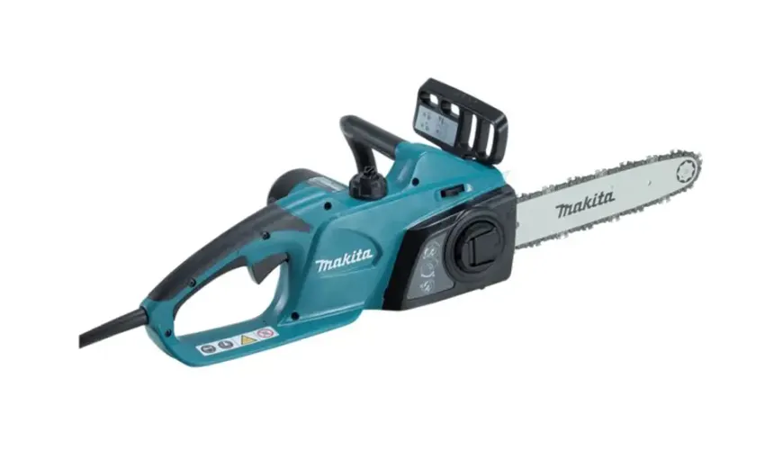

A láncfűrész egy motorral működő, hordozható vágóeszköz, amelyet elsősorban faanyagok vágására használnak. Legfontosabb része a fogakkal ellátott, körbefutó lánc, amely egy hosszú vezetőlemezen mozog.
A láncfűrészeket leggyakrabban fakitermelésnél, erdőgazdálkodásban, tűzifa feldolgozásánál és kertészeti munkák során használják. Léteznek benzines és elektromos, illetve akkumulátoros változatok is.
A láncfűrész nagy segítséget jelenthet a megfelelő munkák elvégzésében, azonban veszélyes szerszám, ezért használata során különösen fontos a megfelelő védőfelszerelés és a biztonsági szabályok betartása.
Vissza a tetejére!A láncfűrész elődjei már a 19. században megjelentek, azonban ezek még jelentősen különböztek a mai gépektől. Az első láncos fűrészeket többek között az orvostudományban is alkalmazták, például csontvágásra.
A faipari célokra készült motoros láncfűrészek a 20. században kezdtek elterjedni. A technológia fejlődésével a gépek egyre könnyebbek, erősebbek és biztonságosabbak lettek.
A láncfűrészek elterjedése nagy változást hozott az erdőgazdálkodásban, mivel a kézi fűrészekhez képest sokkal gyorsabban lehetett velük fát darabolni és feldolgozni.
Vissza a tetejére!A láncfűrészek piacán több ismert gyártó is jelen van. Ezek a vállalatok különböző teljesítményű és kialakítású gépeket készítenek, amelyeket otthoni és professzionális felhasználásra egyaránt kínálnak.
A STIHL egy német vállalat, amely világszerte ismert erdészeti és kertészeti gépeiről. Láncfűrészei között megtalálhatók benzines, elektromos és akkumulátoros modellek is.

A Husqvarna svéd vállalat, amely hosszú múltra tekint vissza. Láncfűrészeit elsősorban erdészeti, kertészeti és professzionális felhasználásra fejleszti.

A Makita japán gyártó, amely számos elektromos és akkumulátoros szerszámot készít. Láncfűrészei között főként modern, akkumulátoros modellek találhatók.

Vissza a tetejére!A láncfűrész napjaink egyik fontos faipari és kertészeti eszköze. Hosszú fejlődésen ment keresztül, és ma már sokféle változata létezik. A modern gépek hatékonyak és könnyen kezelhetők, de használatuk során mindig elsődleges szempont kell legyen a biztonság.
Vissza a tetejére!